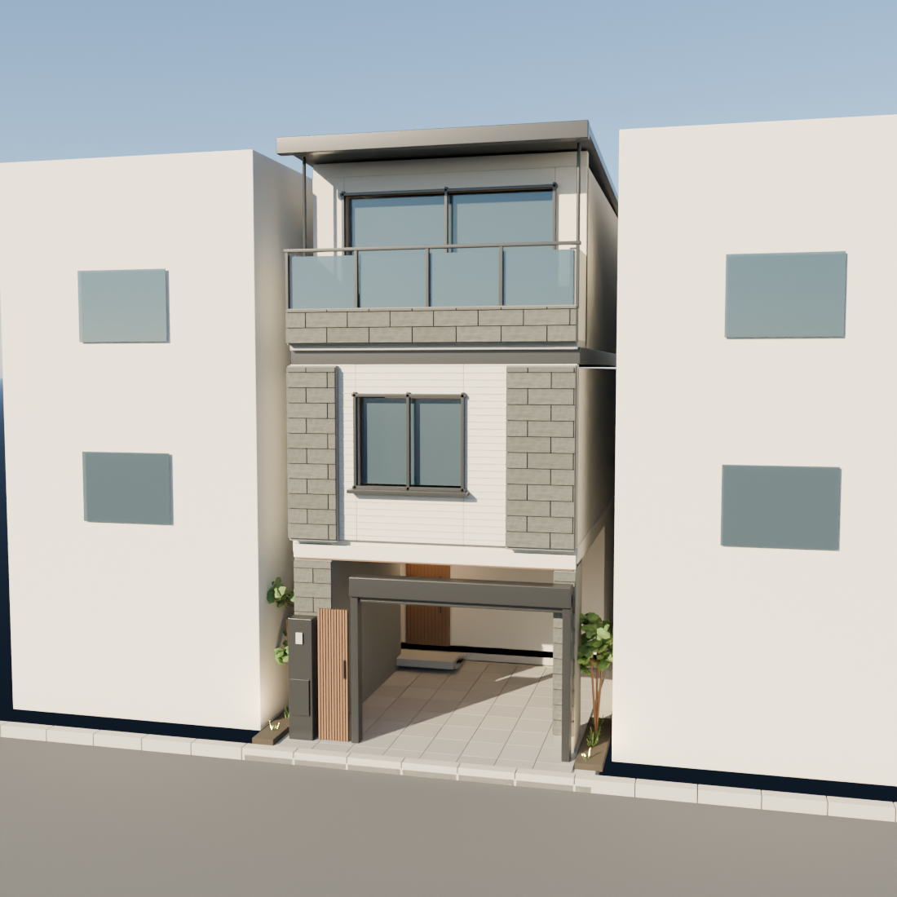

画像で外観と室内をご覧いただけます。
玄関・駐車スペース・バルコニーをご覧ください。
外観と各階を切り替えてご覧いただけます。1階・3階は3D表示です。
公式のTYPE2間取り・仕様を参考にした試作です。寸法、屋根、外壁の貼り分け、窓高さなどに推定が含まれ、家具・照明は提案です。実際の建物・眺望・日当たりを保証するものではありません。
1階・2階LDK・3階を切り替えて見学できます。階段を使った階をまたぐ連続移動には対応していません。1階・3階は間取り画像を基にした概略モデルです。寸法、建具、設備形状は仮設定を含みます。3階の勾配天井は未再現で、天井を外して表示しています。家具は配置提案です。広角表示は遠近感が強くなるため、部屋の広さは図面の帖数と併せてご確認ください。3Dは軽量表示のため天井・照明を簡略化しています。3Dの素材表現は公式ギャラリーを参考に2026年10月15日に調整しました。写真の住戸タイプや製品型番との一致は未確認です。画像表示は従来の試作レンダリングです。